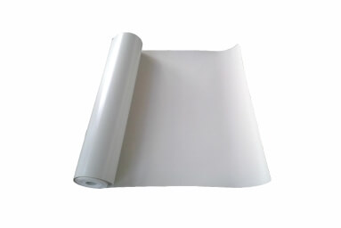

当前位置：
当前位置：
产品概述
CPE氯化聚乙烯防水卷材是以氯化聚乙烯（CPE）树脂为主要原料，加入稳定剂、抗氧剂、抗老化剂和紫外线吸收剂等辅助材料，所制成的防水材料。
产品图片

产品特性
拉伸强度高、伸长率大，抗变形能力强。
优良的耐候性，不易老化，使用寿命长。
优异的抗高、低温性能，适用温度范围广。
冷施工，无污染。
执行标准
GB12953-2003 氯化聚乙烯防水卷材
N类卷材
| 项目 | 指标 | ||
|---|---|---|---|
| I型 | II型 | ||
| 拉伸强度/MPa ≥ | 5.0 | 8.0 | |
| 断裂伸长率/% ≥ | 200 | 300 | |
| 热处理尺寸变化率/% ≤ | 3.0 | 横向2.5 横向1.5 | |
| 抗穿孔性 | 不渗水 | ||
| 不透水性 | 不透水 | ||
| 低温弯折性/℃ | -20，无裂纹 | -25，无裂纹 | |
| 剪切状态下的粘合性/（N/mm） ≥ | 3.0或卷材破坏 | ||
| 热老化处理 | 外观 | 无起泡、裂纹、粘结与孔洞 | |
| 拉伸强度变化率/% | +50 -20 | ±20 | |
| 断裂伸长率变化率/% | +50 -30 | ±20 | |
| 低温弯折性 | -15℃无裂纹 | -20℃无裂纹 | |
| 耐化学侵蚀 | 拉伸强度变化率/% | ±30 | ±20 |
| 断裂伸长率变化率/% | ±30 | ±20 | |
| 低温弯折性 | -15℃无裂纹 | -20℃无裂纹 | |
| 人工气候加速老化 | 拉伸强度变化率/% | +50 -20 | ±20 |
| 断裂伸长率变化率/% | +50 -30 | ±20 | |
| 低温弯折性 | -15℃无裂纹 | -20℃无裂纹 | |
L类及W类卷材
| 项目 | 指标 | ||
|---|---|---|---|
| I型 | II型 | ||
| 拉力/（N/cm） ≥ | 70 | 120 | |
| 断裂伸长率/% ≥ | 120 | 150 | |
| 热处理尺寸变化率/% ≤ | 1.0 | ||
| 抗穿孔性 | 不渗水 | ||
| 不透水性 | 不透水 | ||
| 低温弯折性/℃ | -20，无裂纹 | -25，无裂纹 | |
| 剪切状态下的粘合性/（N/mm） ≥ | L类 | 3.0或卷材破坏 | |
| W类 | 6.0或卷材破坏 | ||
| 热老化处理 | 外观 | 无起泡、裂纹、粘结与孔洞 | |
| 拉力/（N/cm） ≥ | 55 | 100 | |
| 断裂伸长率变化率/% ≥ | 55 | 100 | |
| 低温弯折性 | -15℃无裂纹 | -20℃无裂纹 | |
| 耐化学侵蚀 | 拉力/（N/cm） ≥ | 55 | 100 |
| 断裂伸长率/% ≥ | 100 | 200 | |
| 低温弯折性 | -15℃无裂纹 | -20℃无裂纹 | |
| 人工气候加速老化 | 拉力/（N/cm） ≥ | 55 | 100 |
| 断裂伸长率/% ≥ | 100 | 200 | |
| 低温弯折性 | -15℃无裂纹 | -20℃无裂纹 | |
应用领域
广泛应用于高铁、地铁以及隧道、路桥、涵洞、水池等防水、防渗工程。